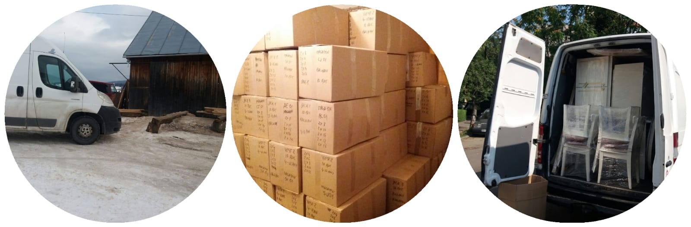
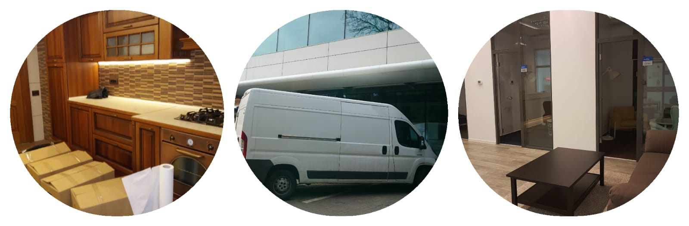

Udi Transport
 
Oferim solutii complexe precum mutari mobilier, relocari firme, transport mobila, debarasare mobilier, relocari internationale. Transportul se efectueaza cu autoutilitare de 3.5 tone, iar echipele noastre de profesionisti pot incarca si descarca in deplina siguranta bunurile transportate. Pentru ca timpul dumneavoastra este pretios va punem la dispozitie serviciul de ambalare si impachetare. Obiectele dumneavoasta vor fi protejate cu materiale profesionale si asezate in cutii speciale pentru transport.
Atunci cand aveti nevoie o firma de mutari si transport este foarte important sa gasiti partenerul perfect. De aceea noi va punem la dispozitie parerea clientilor anteriori.
PUNCTUALITATE
GRIJA PENTRU OBIECTE
SERIOZITATE
PRET AVANTAJOS
TRANSPORT RAPID
Societatea UdiTransport ofera servicii de Mutari si Transport Mobila in Bucuresti dar si in tara. Pentru informatii suplimentare un ezitati sa ne contactati! Lasati mutarea in seama noastra! Servicii complete de mutari locuinte si transport mobila. Protejam mobilierul si obiecele fragile prin infoliere, impachetam lucrurile personale in cutii de transport, caram si pozitionam toate bunurile in noua locatie.
Puteti opta pentru o vizita din partea unui consilier specializat in relocari pentru o evaluare corecta si adaptata nevoilor dumneavoastra; sau puteti folosi formularul de contact/ apelul telefonic unde un consilier va gasi solutia potrivita.
In prima faza, obiectele mici precum si imbracamintea se pun in cutii speciale de mutari. Obiectele fragile vor fi impachetate in folie protectoare. Ambalarea bunurilor se face cu folie strech sau folie bule. In functie de dimensiunile obiectelor de mobilier, vor fi demontate sau transportate ca atare, nu inainte de a fi ambalate. Toate cutiile si obiectele de mobilier vor fi etichetate pentru a fi asezate corespunzator in noua locatie.
Dupa ambalarea tuturor obiectelor ce urmeaza a fi relocate, personalul nostru calificat incepe incarcarea in autoutilitara. Bunurile vor fi transportate pana la masina cu grija, fara a provoca daune obiectelor in sine sau peretilor pe unde se trece in drumul spre masina. Odata ajunse in masina, bunurile sunt asigurate cu chingi profesionale, pentru a un se misca pe durata transportului. Obiectele incarcate pleaca la drum, local in Bucuresti sau in tara/din tara. Autoutilitarele sunt conduse de soferi profesionisti cu experienta.
Oferim cele mai bune solutii business pentru operatiuni de mutari firme local in Bucuresti cat si national. Fie ca vorbim despre birouri cu 5 angajati sau despre birouri cu peste 50 de angajati, UdiTransport ofera solutii de relocare la standarde europene.
In functie de cerintele si nevoile dumneavoastra, UdiTransport ofera solutii de relocare fara a perturba activitatea, prin solutii de mutare dupa program, in weekend sau noaptea. Recomandam o evaluare cat mai exacta pentru a oferi solutia personalizata de relocare.
Relocarea poate fi o actiune stresanta, motiv pentru care echipa UdiTransport, se adapteaza nevoilor dumneavoastra, oferind servicii aditionale pentru ca dumnevoastra sa beneficiati pe o mutare fara stres.
Transport rapid in Romania si UE.
Va punem la dispozitie unelte profesionale si personal calificat, astfel puteti sta fara nicio grija, totul se va imbina perfect la noua locatie.
De asemenea mobilierul se poate infolia cu folie stretch, iar pentru piesele extrem de sensibile folosim folie bubble sau chiar paturi specile penrtu pianine.
0732.548.835
Bld. Iuliu Maniu Nr.168uditransport@gmail.com